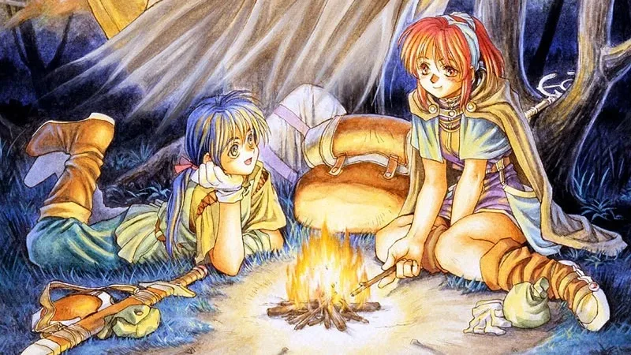

Luiso · 16 de septiembre de 2026
Falcom acaba de abrirle la puerta a una nueva etapa para uno de los capítulos más antiguos de The Legend of Heroes. La compañía japonesa confirmó un acuerdo de licencia con NEOWIZ para desarrollar una nueva versión de The Legend of Heroes III: White Witch para PC y consolas, con lanzamiento previsto a nivel mundial.
El anuncio tiene una particularidad que puede generar bastante confusión, especialmente entre quienes conocieron la saga fuera de Japón. En Occidente, White Witch fue lanzado originalmente para PSP como The Legend of Heroes II: Prophecy of the Moonlight Witch. En Japón, sin embargo, siempre fue conocido como The Legend of Heroes III: White Witch.
Por lo tanto, el proyecto anunciado ahora no corresponde al segundo juego de la franquicia, sino al tercer Legend of Heroes y, además, al primer capítulo de la denominada Trilogía de Gagharv.
White Witch debutó originalmente en 1994 para PC-9801 y cuenta la historia de Jurio y Chris, dos jóvenes que emprenden un viaje de peregrinación que termina llevándolos a descubrir el misterio detrás de la llamada Bruja Blanca. Falcom lo presentó en su momento como un RPG centrado especialmente en la narración, la construcción del mundo y las relaciones entre sus personajes.
El juego forma parte de la Trilogía de Gagharv junto con The Legend of Heroes IV: A Tear of Vermillion y The Legend of Heroes V: A Cagesong of the Ocean. Aunque los tres títulos cuentan historias y protagonistas diferentes, comparten un mismo universo.
Para Falcom, esta trilogía tiene además un valor histórico especial: la compañía la considera uno de los antecedentes directos de The Legend of Heroes: Trails. De hecho, Falcom asegura que la Trilogía de Gagharv fue elegida en una encuesta por el 40.º aniversario de la compañía como la serie que los jugadores más querían volver a ver en plataformas actuales.
Aunque el anuncio pueda parecer un remake completamente nuevo de un RPG de 1994, White Witch ya tuvo varias versiones a lo largo de los años.
La versión original recibió posteriormente una edición Renewal para PC, y también fue adaptada para distintas plataformas. Más tarde llegó a PSP, que fue precisamente la versión que recibió lanzamiento occidental bajo el nombre The Legend of Heroes II: Prophecy of the Moonlight Witch.
Incluso el pasado 20 de agosto White Witch volvió a estar disponible en Nintendo Switch mediante EGG Console, utilizando la versión PC-9801 Renewal. Esta edición mantiene el juego clásico con mejoras de mecánicas y balance, por lo que no debe confundirse con el nuevo proyecto de NEOWIZ.
Lo que todavía no está claro es qué clase de proyecto está preparando NEOWIZ. Falcom solamente confirmó el desarrollo para PC y consolas y su lanzamiento mundial. Por ahora no se anunció si será un remake completo, una remasterización moderna o una reinterpretación más profunda del RPG original. Tampoco se revelaron plataformas concretas ni una fecha de lanzamiento.
El juego original de la franquicia pertenece a una etapa anterior de Falcom y está separado de la Trilogía de Gagharv. Incluso The Legend of Heroes II japonés es otro juego diferente. La actual iniciativa de NEOWIZ está centrada específicamente en The Legend of Heroes III: White Witch y, por extensión, en recuperar la etapa de Gagharv.
Falcom no explicó públicamente por qué eligió específicamente White Witch para este proyecto. Lo que sí dejó claro es que Gagharv tiene una enorme demanda entre sus seguidores y que la trilogía ocupa un lugar fundamental en la evolución de la saga.
Además, White Witch tiene una característica interesante: es el primer lanzamiento de la Trilogía de Gagharv, aunque cronológicamente sus acontecimientos ocurren después de los otros dos juegos. Por eso funciona como una puerta de entrada especialmente representativa a esta etapa de la franquicia.
Y existe otro detalle que puede haber ayudado a su elección: el juego ya tuvo presencia internacional gracias a su versión de PSP, aunque con aquella peculiar numeración occidental.
Por ahora, lo concreto es que White Witch tendrá una nueva oportunidad de llegar a una audiencia moderna. Y si el proyecto tiene buena recepción, podría convertirse también en una vía para recuperar los otros dos capítulos de Gagharv.